Somos InControl gives you one page per room — instant volume, real EQ, sound presets, home theater setup and music — over your local Wi-Fi, with no account, and no cloud for control. It's built for people who want to adjust the sound and get back to whatever they were doing.

Written about, unprompted
And from the people using it
A minute in the app on a real system — the room page, Home Theater Setup, and presets loading.
Real screenshots from the current beta in Demo Mode and dark mode, with what each screen does. Every item links to its page in the guide.
Each room gets one page. Everything you touch applies to the speaker as you touch it, and the page follows the app's light or dark appearance — this is dark mode, on the Demo Mode room the app lets you explore before it has found your speakers.
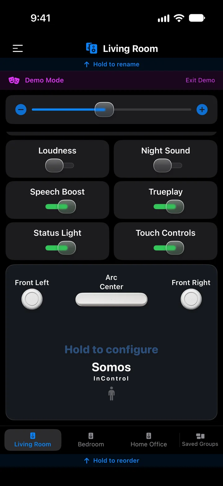
Below the sound switches sits a drawing of the room: the soundbar in the centre and every speaker bonded to it, in the place it plays from. Here an Arc with a separate front left and front right.

Press and hold the room map on a soundbar's page to open this sheet. Assign speakers to Front Left, Front Right, Surround Left, Surround Right, Subwoofer and Subwoofer 2 — including separate front speakers, which the official app doesn't offer.

Tap Music in the source row to open it. Your music services sit in a strip under the volume — tap one to browse it — and the player card shows what the speaker is playing. The speaker streams straight from the service; your phone is only the remote.
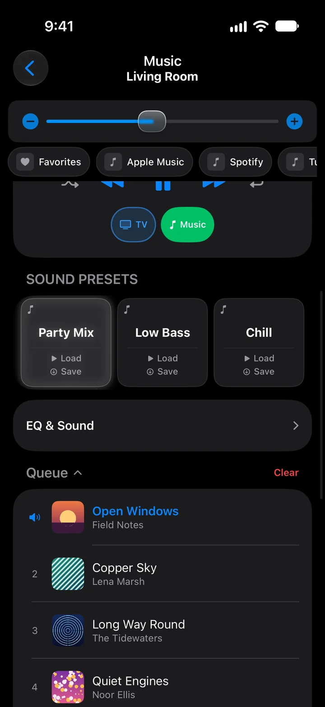
Scroll the Music page and the rest follows: the music presets, a collapsible EQ & Sound card, and the queue with a cover for every song and the playing one marked.

Everything that isn't a sound control lives here, top-left of every room.
The same app, with the room to breathe: on an iPad Pro 11-inch the whole room page fits on one screen. Demo Mode, dark mode, from the current beta.
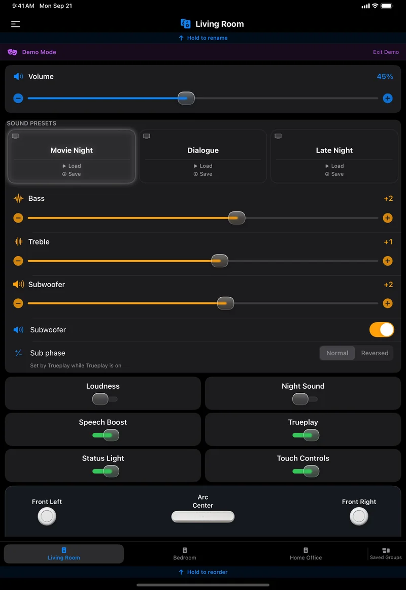
Volume, presets, every slider, every switch and the room map, without scrolling. The presets spread into three wide cards and the switches into two columns.
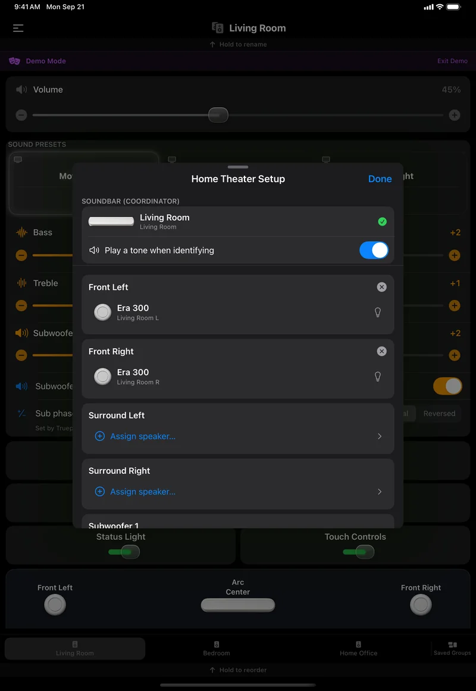
The sheet floats in the middle of the page instead of covering it, so the room stays visible behind it while you assign speakers.
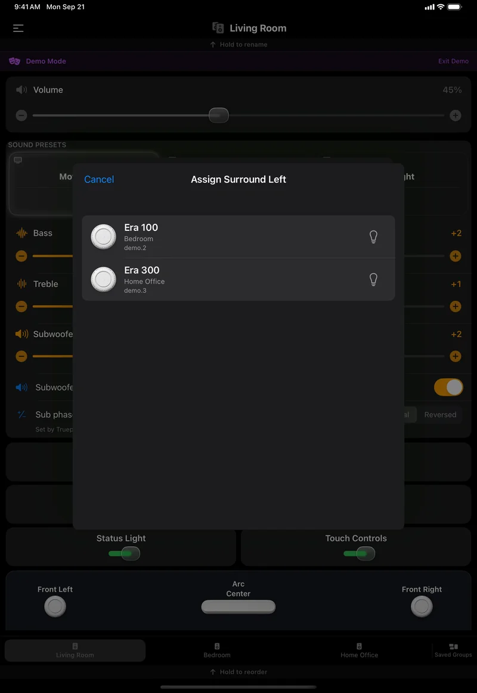
Tap Assign speaker… and every speaker in the house that could take the slot is listed with its room. Tap the bulb to flash the one you mean before you commit.
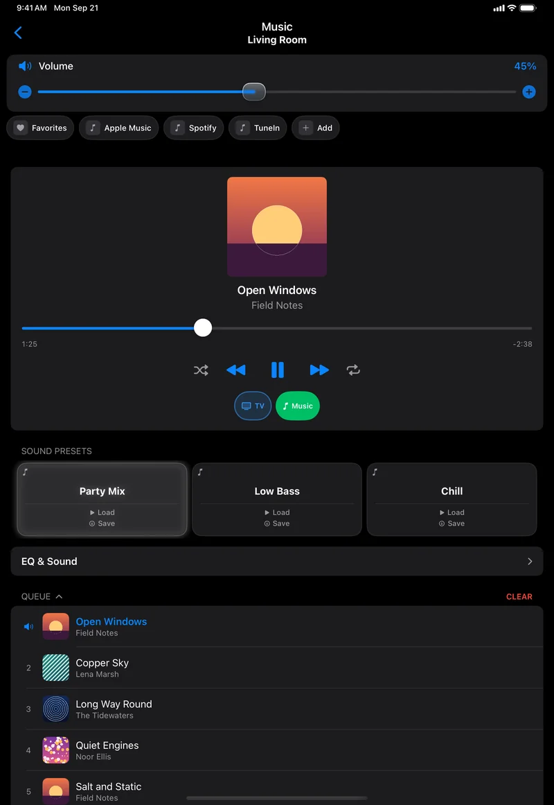
The services strip, the player, the music presets and the queue on one screen, each song in the queue with its cover.
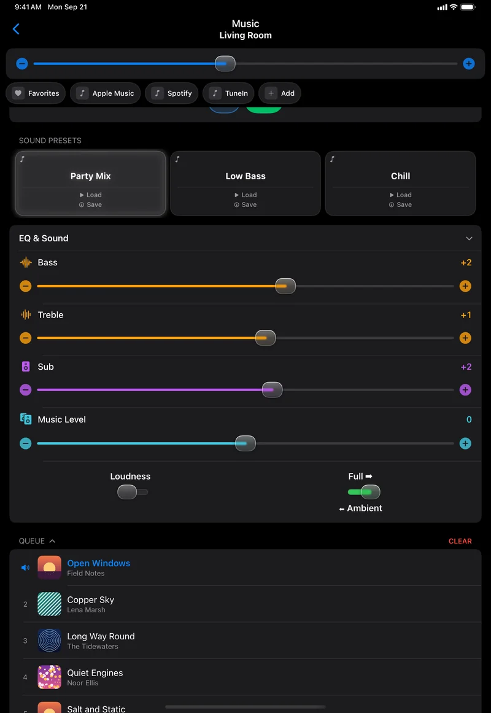
Open the card and the music EQ unfolds under the presets: the same bass and treble as the room page, plus the controls that only matter for music.
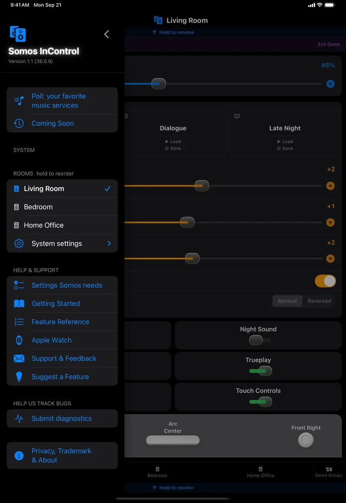
On the iPad the menu slides over the left third of the page, so the room stays in view. The whole list fits without scrolling.
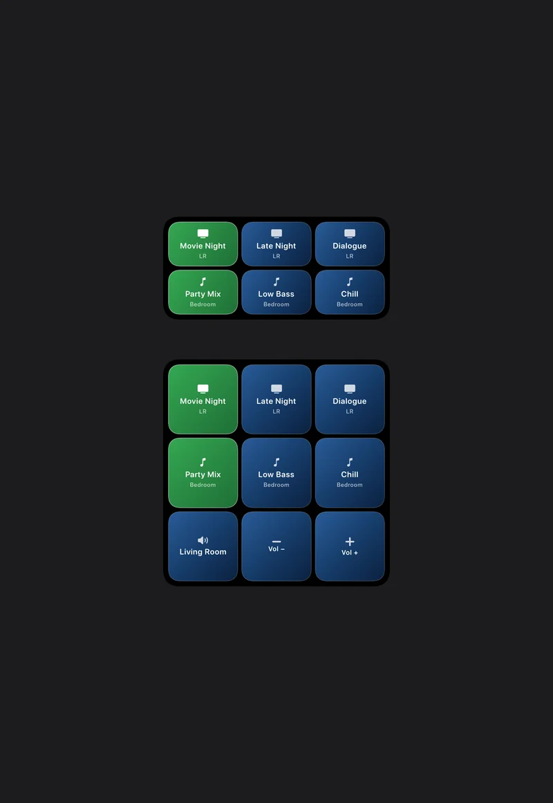
The Home Screen widgets, shown here at iPad size on a plain background: the medium widget carries two rooms' presets, the large one adds a volume row for a room. Each button loads that preset.
Somos InControl installs a small Apple Watch app alongside the iPhone app. Real screenshots from the Apple Watch Ultra 3 simulator with Demo Mode rooms; the last frame is the app's Smart Stack card drawn on a plain background.
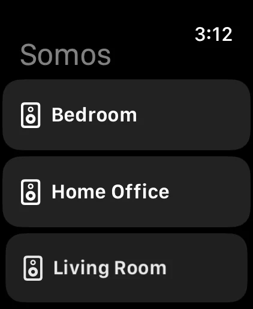
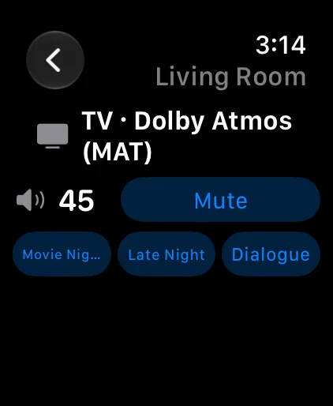
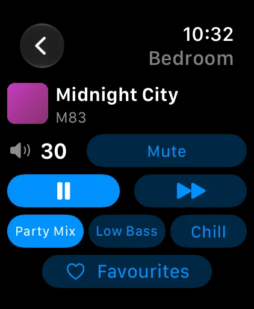
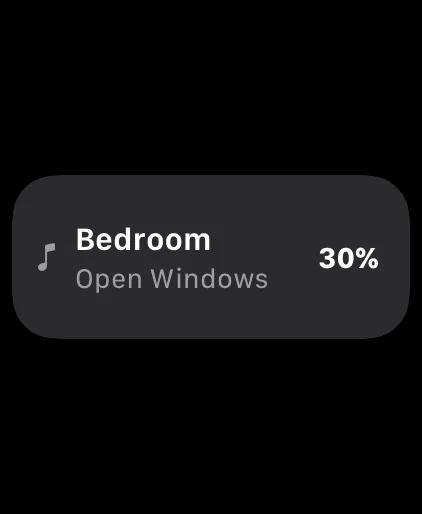
Open Somos on the phone once and your rooms appear on the Watch, in the same order as your bottom bar. Tap a room to see what is playing — the TV input and its audio format, or the song and its cover — then turn the Digital Crown for volume; the Watch talks to the speaker directly over your home Wi-Fi.
Music services — sign in to Amazon Music, Pandora, Spotify, iHeartRadio and Bandcamp right from the Music sheet, plus Apple Music (linked in the Sonos app) — are live in the beta now. Your own music server is next.
Somos InControl works with Sonos® speakers that support local control — S1 and S2 systems, and more than one system at a time. If a speaker shows in the official app on the same Wi-Fi, it shows here. Every room gets volume, mute, bass, treble, loudness, presets, Trueplay, Status Light, Touch Controls and the Music sheet; the room's hardware adds the rest.
| Room type | Additional controls |
|---|---|
| Soundbar room | TV / Music source, audio-format badge, Night Sound, Speech Boost (a five-step slider on the Arc Ultra), height on height-capable bars, surround level and on/off, Group Audio Delay, Home Theater Setup |
| Stereo pair | Balance slider, separate-pair option; a music room — its presets and EQ are on the Music sheet |
| Any room with a bonded Sub | Subwoofer level and on/off; Sub phase (Normal / Reversed, set by Trueplay while Trueplay is on); crossover (50–110 Hz) wherever the speaker reports one. A Sub never turns a music room into a TV room |
| Portable (Move, Roam) | Battery level in the status line |
Every model below also gets the basics from the table above — volume, bass, treble, loudness, presets, Trueplay, Status Light, Touch Controls and Music. This is what's added on top, model by model, and which Sonos system each one runs on.
| Speaker | Type | Runs on | What Somos adds |
|---|---|---|---|
| Playbar | Soundbar | S1 + S2 | TV / Music source, audio-format badge, Night Sound, Speech Boost, fronts / surrounds / Sub bonding |
| Playbase | Soundbar | S1 + S2 | TV / Music source, audio-format badge, Night Sound, Speech Boost, fronts / surrounds / Sub bonding |
| Beam (Gen 1) | Soundbar | S1 + S2 | TV / Music source, audio-format badge, Night Sound, Speech Boost, fronts / surrounds / Sub bonding |
| Beam (Gen 2) | Soundbar | S2 only | TV / Music source, audio-format badge, Night Sound, Speech Boost, height level, fronts / surrounds / Sub bonding |
| Arc | Soundbar | S2 only | TV / Music source, audio-format badge, Night Sound, Speech Boost, height level, fronts / surrounds / Sub bonding |
| Arc Ultra | Soundbar | S2 only | TV / Music source, audio-format badge, Night Sound, a five-step Speech Boost slider, height level, fronts / surrounds / Sub bonding, Sub crossover slider |
| Ray | Soundbar | S2 only | TV / Music source, audio-format badge, Night Sound, Speech Boost, fronts / surrounds / Sub bonding |
| One (Gen 1 & 2) | Speaker | S1 + S2 | Balance, when stereo-paired |
| One SL | Speaker | S2 only | Balance, when stereo-paired |
| Play:1 | Speaker | S1 + S2 | Balance, when stereo-paired |
| Play:3 | Speaker | S1 + S2 | Balance, when stereo-paired |
| Play:5 (Gen 1) | Speaker | S1 only | Balance, when stereo-paired |
| Play:5 (Gen 2) | Speaker | S1 + S2 | Balance, when stereo-paired |
| Five | Speaker | S2 only | Balance, when stereo-paired |
| Era 100 (incl. Era 100 SL) | Speaker | S2 only | Balance, when stereo-paired |
| Era 300 | Speaker | S2 only | Balance, when stereo-paired; unlocks the Height slider when bonded as a soundbar's surround |
| SYMFONISK Bookshelf | Speaker | S1 + S2 | Balance, when stereo-paired |
| SYMFONISK Bookshelf (Gen 2) | Speaker | S2 only | Balance, when stereo-paired |
| Move | Portable | S1 + S2 | Battery level in the status line |
| Move 2 | Portable | S2 only | Battery level in the status line |
| Roam (incl. Roam SL, Roam 2) | Portable | S2 only | Battery level in the status line |
| Amp | Amp | S1 + S2 | Sub crossover slider, when a Sub is bonded and the speaker allows it |
| Connect | Amp | S1 + S2 | — |
| Connect:Amp | Amp | S1 + S2 | — |
| Port | Amp | S1 + S2 | — |
| Sub (incl. Sub Gen 2) | Sub | S1 + S2 | Bonds into the paired room's Sub level, on/off and Sub phase (and crossover, where offered) — no page of its own |
| Sub (Gen 4) | Sub | S2 only | Bonds into the paired room's Sub level, on/off and Sub phase (and crossover, where offered) — no page of its own |
| Sub Mini | Sub | S2 only | Bonds into the paired room's Sub level, on/off and Sub phase (and crossover, where offered) — no page of its own |